Skylineのターゲット分析(SRM)のデータ解析では、質量分析装置で得られたrawデータをドキュメントにインポートすることで情報を視覚的に表示することが可能です。Skylineはもともとプロテオミクス解析ソフトとして開発されてきましたが、最近は代謝物などの低分子化合物のデータ解析にも対応できるように拡張されています。本チュートリアルでは、低分子化合物の定量データ解析にSkylineを使用する方法を説明します。
このチュートリアルでは、WatersのXevo TQ-S triple quad （LC-MS/MS）で測定したエネルギー代謝産物のデータ解析メソッドの作成について説明します。データセットの分析では、以下の項目について学びます。
このチュートリアルのベースとなっているSkylineチュートリアルウェビナー16の後半も併せてご覧ください。
Skylineは質量分析装置によるターゲット定量分析（SRM）のプラットフォームの提供をしています。質量分析装置は複数の装置メーカー（Agilent、SCIEX、Bruker、Shimadzu、Thermo-Scientific、Watersなど）がありますが、Skylineではこれら複数の分析装置メーカーのrawデータをインポートすることが可能です。さまざまな装置で取得したデータがインポート可能なので、プロテオミクス、メタボロミクスなどターゲット分子に依存せずかつ装置間のデータ比較および複数施設間での共同研究も容易となりました。
まだ「Skyline小分子ターゲット」チュートリアルをご覧になっていない方は、Skylineで化学式や付加（Na Adductなど）がどう表示されるかご覧ください。。
チュートリアルを始める前に、zipファイルを以下のリンクからダウンロードしてください。
https://skyline.ms/tutorials/SmallMo+leculeMethodDevAndCEOptimization.zip
ファイルを以下のコンピュータ上のフォルダで解凍します。
C:\Users\bspratt\Documents
新しいフォルダが内部に作成されます。
C:\Users\bspratt\Documents\SmallMolMethodCE
フォルダにはチュートリアルで必要なファイルがすべて含まれています。
すでにSkylineを使用しているユーザーは、まずSkylineをデフォルト設定に戻してください。デフォルト設定に戻す方法は以下の通りです。

これでSkylineのドキュメント設定がデフォルトにリセットされました。
このチュートリアルは低分子化合物に関するもので分子用インターフェイスが選択できます。
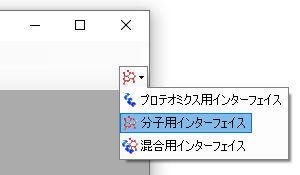
Skylineウィンドウの右上隅の分子アイコン  で表示される分子モードでの動作に切り替わり、プロテオミクスメニューやコントロールが表示されなくなります。
で表示される分子モードでの動作に切り替わり、プロテオミクスメニューやコントロールが表示されなくなります。
本チュートリアルのRawデータはUPLC-MS/MS（WatersのAcquity UPLC- Xevo TQ-S）でデータ取得されたものですが、トランジションリストはAgilentの質量分析装置（Agilent 1290 Infinity II UHPLC - 6495 triple quadrupole mass spectrometer）とHILICカラムで測定した過去文献に基づいていますす（Guder et al. Anal Chem. 2017 Feb 7;89(3):1624-1631）。
公開されているトランジションリストは以下の通りです。

各分子のライト（12C）およびヘビー（13C: 安定同位体標識）プリカーサーやフラグメントのm/z、電荷に関する情報がすべて記載されています。ここではネガティブモードのエントリのみを使って作業します。CE（Collison energy）値は過去文献に記載されている（Agilent 6495 triple quadrupole mass spectrometer）のものです。異なる装置（Waters Xevo TQ-Sなど）で新しいメソッドを作成する場合も同様にして行います。
Excelや他のスプレッドシートエディターを使用すれば、Skylineで読み込める上記のような表にフォーマット化ができます。たとえば、各トランジションのヘビーとライトの段（列）は、メーカーが異なる装置のトランジションリストでは列が別の位置になることもあります。本チュートリアルの開始時に作成したフォルダの中にある「Energy_TransitionList.csv」ファイルはすでにフォーマット化したファイルとなります。
「Energy_TransitionList.csv」ファイルはSkylineが認識する列ヘッダーにフォーマット化されています。[ トランジションリストの挿入 ] フォームで（メニューオプションから [ 編集 ] > [ 挿入 ] > [ トランジションリスト ]）ヘッダー行を含むすべてをSkylineの [ ターゲット ] ビューに貼り付けるだけです。以下に手順を記載します。
Skylineウィンドウは以下のようになります。

| 注：本チュートリアルではこのターゲットのm/zと電荷値を記載していますが、化学式や同位体標識などより詳細な情報も記録できます。フルスキャンや高分解能MSで取得したデータを解析する場合は化学式があると同位体分布も計算でき、有用です。今回は四重極を用いたSRMデータなので、m/zと電荷のみで十分です。 |
以下の手順でトランジション設定を更新し、装置メソッドと本チュートリアルで用いる測定データを合わせます。インポート元のCEデータとRawデータがそれぞれ異なる装置を用いて行うためこの作業は重要です。

衝突エネルギーの値はAgilentの装置由来ですすが、RawデータはWaters Xevoなので衝突エネルギー最適化をこのように実施します。

この実験ではトランジション設定で指定したように、負の電荷をもつトランジションのみのネガティブモードでの測定となります。Skylineでの付加物の説明は通常よく
目にする「[M-H]」、「[M+Na]」だけでなく、未知のイオンにも対応が可能です（ここで選択した「[M-]」は電荷1の負のイオンモードということで既知の化学組成を反映していません）。今回はフラグメントイオンのトランジションのみ測定するため[ イオンタイプ ] フィールドは「f」にします。プリカーサーイオンも同時に測定したい場合は「f, p」とします。
残りの3つのタブについてですが、[ ライブラリ ] および [ フルスキャン ]は今回は関係ないので適用外、[ 装置 ]についてはデフォルトでの対応が可能なため設定変更は不要となります。
以下のようにしてSkylineドキュメントを保存します。
測定に用いる質量分析装置制御ソフトウェアがインストールされたコンピュータでSkylineを使う場合、指定するテンプレートメソッドファイルを装置のメソッドへエクスポートもできます。一部のThermo装置では装置制御コンピュータでの実行が必須となります。
Rawデータが今回はWatersの装置であるため、Waters MassLynxがインストールされていない場合には、「トランジションリストのエクスポート」のセクションに進んでください。
インストールがすでに完了している場合は以下のように測定時間が2分と5分の2つのメソッドをエクスポートします。
[ メソッドをエクスポート ] は以下のようになります。

お使いのコンピュータで装置メソッドファイルの形式に合う形でのエクスポートができない場合でも（対応する装置メーカーのソフトがインストールされていないなど）、まずエクスポートを行い後でメーカーソフトウェアを使用して装置メソッドでインポートするという方法をとれば装置固有のトランジションリストの形となり使用可能となります。トランジションリストのエクスポートは、Unscheduled（スケジュール化されていない）メソッドをエクスポートする手順はテンプレートファイルがない点を除きScheduledのメソッドのエクスポートと基本的に同じとなります。
[ メソッドをエクスポート ] フォームは以下のようになります。

この時点では、2分および5分のグラジエントのデータを収集します。この実験で使用した試料は市販のキットで抽出した大腸菌 E. coli（Cambridge Isotope Laboratoriesの有資格E. coli溶解物）の代謝産物で炭素が安定同位体標識がされたもの（13C）とされていないもの（12C）が1:1の割合で混合されたものとなります。
この2回の異なるグラジエントで測定された結果は、本チュートリアルの開始時に作成したフォルダ内の「Unscheduled」のサブフォルダにあります。「01a」の表示を含むファイルは2分グラジエントの結果で、「02a」の表示を含むファイルは5分グラジエントでの結果を意味します。これらの結果から実験でどのグラジエントが最も効果的かを調べます。
以下の手順の実施で作成したファイルをドキュメントへインポートします。
[ 結果ファイルをインポート ] フォームは以下のようになります。

これらのファイル名で共通のプリフィックス（ID33140_0）とサフィックス（a_WAA253_4814_092017）があるので以下のフォームが表示されます（ファイル名の短縮を提案されます）。

当該ファイルは素早くインポートされ、Skylineメインウィンドウは以下のようになります。

繰り返し測定名「1」と「2」はただの番号にすぎないため、以下のようにしてグラジエント情報を含む名前に変えることができます。

これでメインSkylineウィンドウは以下のようになります。
概要グラフで複数の繰り返し測定の統計結果を1画面表示するには以下の操作を行います。
Skylineウィンドウは以下のようになり繰り返し測定間の比較が可能となります。
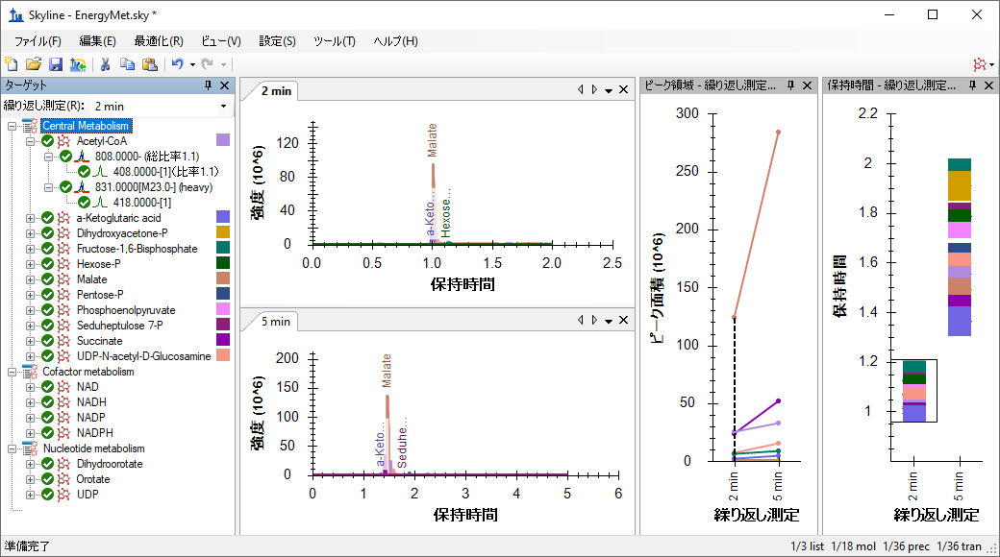
[ ピーク領域 – 繰り返し測定の比較 ] ビューを見ると、5分のグラジエントは2分のグラジエントよりも感度が高い（強度: ピーク面積）ことが分かります。これが測定間のバラツキでないことは測定の繰り返しで確認できます。この場合、5分のメソッドは多くのアナライト（代謝物）でピーク強度が高いように見えます。これはアナライトの分離向上と、イオンサプレッション（Ion supression）（「マトリックス効果」とも呼ばれる）の低下が理由と推測されます。要するにピーク分離が5分のグラジエントでは良好なので夾雑物の存在による感度低下も避けられるということです。それゆえこの実験では5分のグラジエントがよりよいメソッドと判断できます。
クロマトグラフのピークをもっと詳しく調べることも有用です。
Skylineは下図のようになります。5分のグラジエントはピーク分離が良好でアナライト（代謝物）が重なっていないことが分かります。信号強度（ピーク面積値）の改善を考慮すればやはりより長いグラジエントでクロマト分離を良好にしておくことは理にかなっているということがわかります。
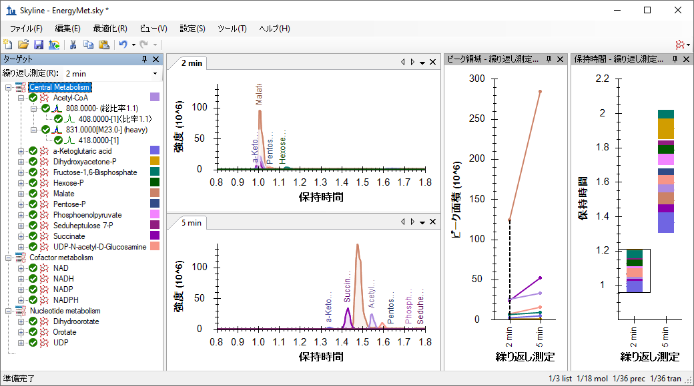
グラジエントを5分に決定したら、今度はスケジュール化されたメソッドまたはトランジションリストを作成します。本チュートリアルでは、Watersの装置制御ソフトウェアであるMassLynxがインストールされておらず、測定メソッドを1から構築するのではなくトランジションリストを作成する場合を想定しています。しかし、テンプレートメソッドファイルをもとにしてメソッドを作成（前述）するのも可能です。
まずトランジションリストにエクスポートされる保持時間ウィンドウの設定を行います。
[ 分子設定 ] フォームは以下のようになります。
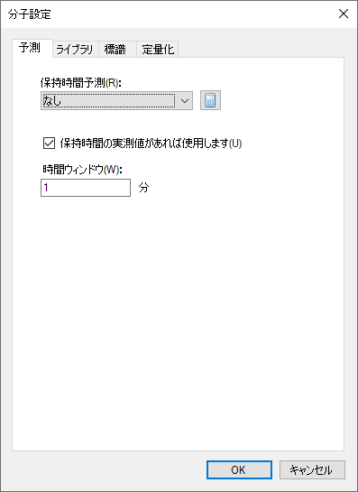
今度は以下のようにしてトランジションリストをエクスポートできます。
[ トランジションリストをエクスポート ] フォームは以下のようになります。
スケジュールの時間設定が必要なので、どのグラジエントを使用するか設定します。ここでは前述の5minのグラジエントを選択します。
[ スケジュールデータ ] フォームは以下のようになります。
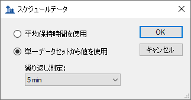
トランジションリストファイル名を入力します。
新しく生成されたスケジュール化されたトランジションリストを使用して質量分析計で測定しデータ収集します。本チュートリアルではデータはライト（同位体ラベル標識なし）とヘビー（安定同位体ラベル標識）の混合比率を変えて3回測定を行ったという設定です。この3回での混合比はそれぞれ1:1混合、1:2混合、2:1混合です。これらの測定結果をドキュメントにインポートするには、以下の操作を行います。
これにより [ 結果をインポート ] フォームでは繰り返し測定名として使用するファイル名がフルファイル名（拡張子は除く）で表示されるようになります。
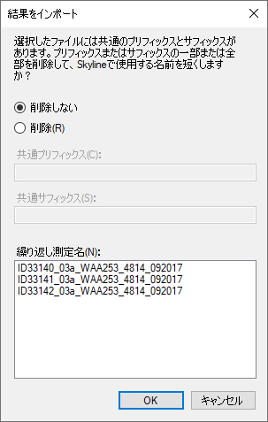
2分のグラジエントのデータのインポートが終了したら、以下のようにしてドキュメントから削除できます。
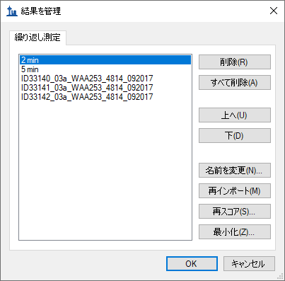
今度は残りの4つの繰り返し測定の名前を以下のようにして変更します。
| 注：この名前変更は、[ 繰り返し測定 ] > [ 繰り返し測定名 ] フィールドを含むカスタムレポートテンプレートを使用して [ ドキュメントグリッド ] で行えます。 |
完了すると、[ 結果を管理 ] フォームは以下のようになります。
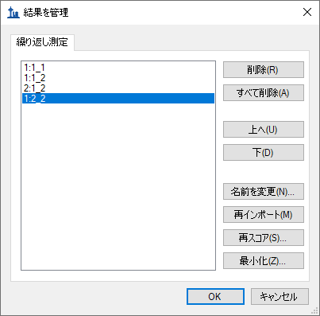
[ ピーク領域 – 繰り返し測定の比較 ] ビューで見ると、試料の既知の比率が視覚的に確認できます。
通常ピーク面積とアナライトの濃度には比例関係があることが予想されます。[ 保持時間 – 繰り返し測定の比較 ] ビューで、Acetyl-CoAは溶出時間が約1.55分で安定していることもわかります。これはスケジュール化メソッドでの測定間でも安定しています。
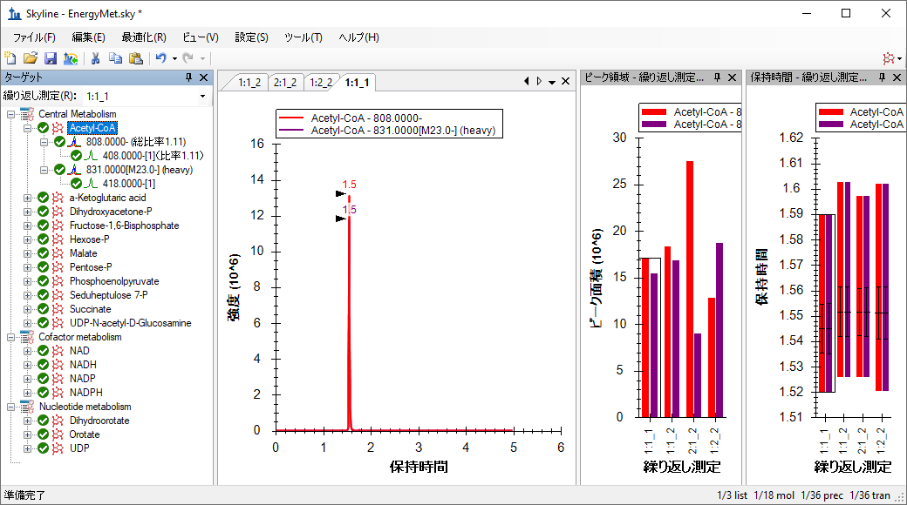
校正機能を使用して、既知の濃度比率とクロマトグラムピーク面積で作成される検量線の線形性評価ができます。
完了すると、[ ドキュメントグリッド ] は以下のようになります。
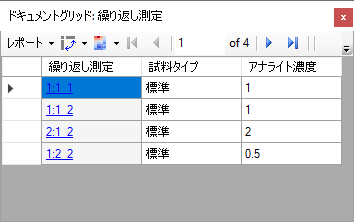
検量線の線形性を調べる前に定量化設定を指定する必要があります。
[ 分子設定 ] フォームは以下のようになります。
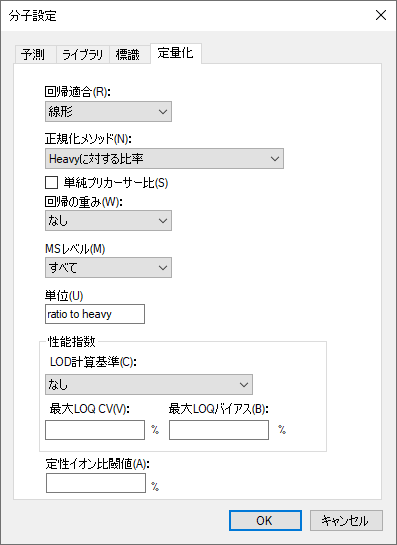
校正曲線グラフを調べるには、以下の操作を行います。
以下のようなグラフが表示されます。
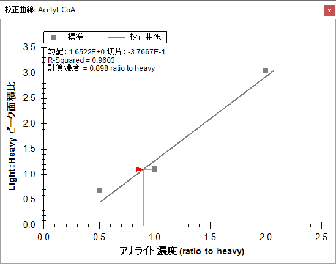
R-Squareの値から線形性は低いと評価されました。それゆえアナライトの濃度を変えて再度測定し線形性のある濃度範囲を探す必要があるということになります。
感度良くアナライト測定ができるよう、各トランジションのCE（衝突エネルギー）を最適化します。衝突エネルギー値はWatersのXevo TQ-SではなくAgilent 6495で実施された文献のもので、装置ごとの最適化プロセスが必要なことがあります。Skylineはスケジュール化されたトランジションリストを作成できますが、この時のCE値は元のトランジションリストの値を中心に複数の異なる衝突エネルギーを自動作成できます。同じトランジションリストを使用して、このチュートリアルですでに見てきた他の例と同様にWaters Xevo TQ-Sで測定し結果を得ます。すでに測定したメソッドからインポートをし、SkylineでWaters装置でのCE値の最適化を行います。
以下のようにして衝突エネルギー設定の確認から始めます。
[ CE計算式を編集 ] フォームが開きますので、[ 最適化 ] のセクションで以下の設定を確認してください。
この設定でSkylineは1トランジションあたり11のCE値で測定をします。衝突エネルギーは元の指定値を中心に各方向に2ボルトずつ5ステップ、または合計11になるように上下に変化させます。通常は比較的大きなステップサイズ（2または3ボルト）で行うのが望ましいですが、ステップ間の信号の変化が大きい場合はステップサイズを下げて（1ボルトなど）最適化を繰り返し微調整することをお勧めします。
、トランジションリストをエクスポートする前に、CE値の最終調整は[ トランジション設定 ] – [ 予測 ] タブで行います。
[ トランジション設定 ] フォームは以下のようになります。
これでスケジュール化されたトランジションリストをエクスポートすることが可能となり、Skylineが測定するターゲット低分子化合物に対する最適なCE値が決まります。もし装置の制御ソフトウェアがインストールされているパソコンで作業をする場合は、測定メソッドファイルのエクスポートの方が望ましいですが、本チュートリアルではトランジションリストのエクスポートを行います。
最適化によってターゲットリスト内の36個のトランジションが（CE値の可変に伴い）11倍になることを思い出しましょう。装置が測定しなければならないトランジションは合計（36X11で）396個となります。
[ トランジションリストをエクスポート ] フォームは以下のようになります。
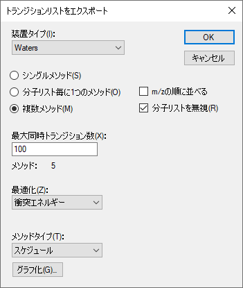
このスケジュール化された取得を選択することで[ 試料インジェクションごとの最大トランジション数 ] フィールド名が[ 最大同時トランジション数 ] に変わることに注意してください。スケジュールによって測定のすべてのトランジションをどのように全サイクルで測定しないようにできるかを考慮します。Skylineは自動的にこの計算を行い、装置がどのサイクルでも絶対に100個以上測定しないようにして、クロマトグラフのピーク全体で希望するドウェル時間とポイントが確実に達成できるように自動調整します。しかしながらここでの396個のトランジションはあまりに数が多いため、フォームの [ メソッド: 5 ] というラベルが表示されます。これは最適化の実施に必要な396個のトランジションを測定するために、装置（質量分析計）で5個の異なるトランジションリストで少なくても合計5回の測定を実際にしなければならないということです。
溶出時間にどの繰り返し測定を使用するか尋ねられます。
[ スケジュールデータ ] フォームは以下のようになります。
トランジションリストファイル名を求められます。
これによって（トランジションリストが異なる）5個のファイルが自動的に作成されます。
文献のトランジションリストをもとに1:1の試料を実際に5回にわけて測定しました。最適化のため作成されたデータファイルをインポートする必要があります。
これまではインポートの際に各データファイルをターゲットとしていたすべてのトランジションに対する完全な測定セットとして扱っていました。ここではCE最適化のための5回の測定を、1セットへとまとめたいと考えます。そこで[ 結果をインポート ] フォームに以下の調整を行います。
フォームは以下のようになります。
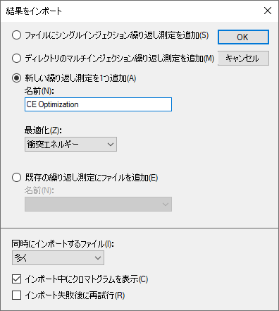
[ 結果ファイルをインポート ] フォームは以下のようになります。
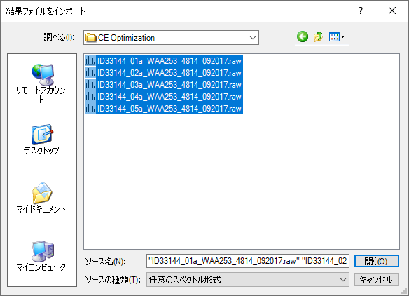
ファイルは「CE Optimization」と言う名前の繰り返し測定として読み込まれ、以下のように [ ターゲット ] ビューの [ 繰り返し測定 ] ドロップダウンリストに表示され、[ 繰り返し測定の比較 ] プロットの一番右端の値として、また以下のようにクロマトグラムプロットの一番右のタブとして表示されます。
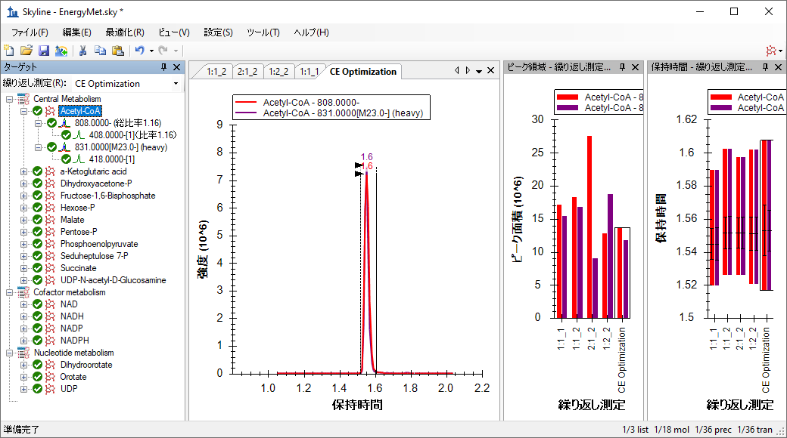
ここで [ ターゲット ] ビューにて11個の異なるCE電圧で測定された11個の測定値を各トランジションについて表示できるようにするために以下の操作を行う必要がいます。
メインSkylineウィンドウは以下のようになります。
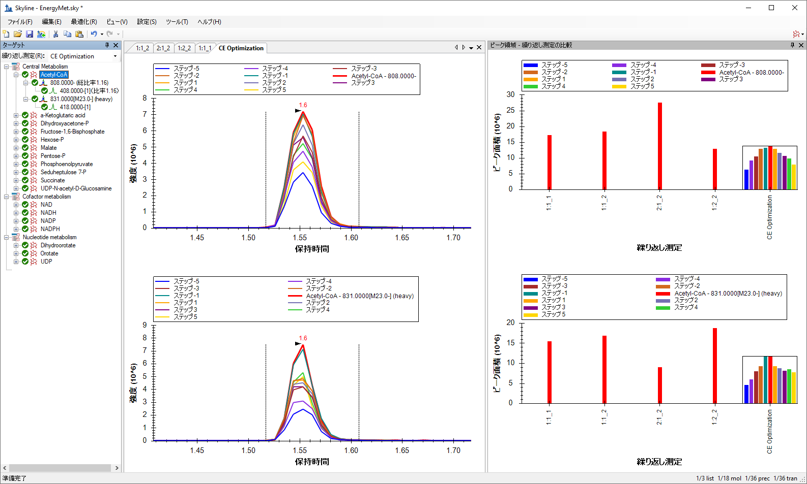
[ ピーク領域 – 繰り返し測定の比較 ] ビューには、ライトとヘビー（安定同位体ラベル）のトランジションがそれぞれライトが上段に、ヘビーが下段に表示されます。CE Optimizationの繰り返し測定では、（紫の円内の）ヒストグラムが各衝突エネルギーごとの感度を示しています。赤は元のCE値（文献のAgilent 6495装置で使用されたもの）、その他の棒はそこから2eVずつ増加させたものです。Acetyl-CoAの場合は、CEが元文献の値もしくは-2eVで最大の感度が得られるということがわかります。凡例を非表示にして、グラフの表示面積を広げると見やすくなります。
Skylineウィンドウは以下のようになります。
これで他の低分子化合物に対しても文献のCE値（衝突エネルギー）が最適かどうかを調べられます。これには、以下の操作が行えます。
Pentose-Pの場合は文献のCE値はWaters Xevo TQ-S上では最適でなく、最適CE値（Step-5、一番左の青い棒）は測定されたCE値の中で最小のものとなります。
このPentoseの場合は最小のCE値なのでさらにCE値を下げて最適値を調べてもよいでしょう。こういう場合はもっと広いステップサイズ（3ボルトなど）で行うのもよいでしょう。いずれにしても、「Step -5」（青いヒストグラム）のCE値は文献のCE値（赤いヒストグラム）での測定よりも明らかによい感度を示しています。
以下のようにして、最も効果的なCE観測値を使用する、新たなスケジュール化されたトランジションリストの作成を進めます。
各トランジションに対して1つの最適CE値のみを使用するため、今回もシングルメソッドのみが必要となります。
[ トランジションリストをエクスポート ] フォームは以下のようになります。
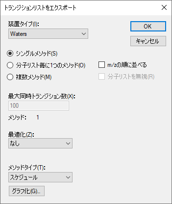
溶出時間にどの繰り返し測定を使用するか尋ねられます。
保持時間はカラムの劣化に伴いドリフトすることがあるので直近の測定での保持時間を典型例として保持時間を設定できます。このチュートリアルでは保持時間はかなり安定していることがわかります。それゆえ先ほどの1分のスケジュールウィンドウにて、このフォームのオプションはどの場合でも問題ないことになります。どれを選択しても最適CE値がCE最適化の測定データから選択されます。
[ スケジュールデータ ] フォームは以下のようになります。
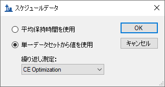
トランジションリストファイル名を入力します。
ここまで18種類のエネルギー代謝産物と内部標準（安定同位体ラベル代謝物）に対するSRMトランジションの作成、CE値の最適化などを文献で用いた装置Agilent 6495と異なるWaters Xevo TQ-Sでの測定用に最適化させました。ここまでの最適化の前後を比較すると興味深いことがわかります。
Pentose-PのCEをさらに最適化したい場合は（最適と特定されているCE値が測定範囲の中で最小のCE値であったため）、EnergyMet_5minutes_optimal.csvトランジションリストを新たなCE最適化の出発点（この場合は前回の最適化で最小のCE値となります）として使用し、今度はステップサイズを1ボルトにステップ数は減らして最適化プロセスを繰り返せばよいだけです。
CE値の最適化を行う際は、大きなステップ値で開始して幅広い範囲のCE値をテストし、その後より小さなステップにて最適値を絞り込んでいくといいでしょう。CE最適化を行うときに [ 設定 ] メニュー、[ トランジション設定 ]、[ 予測 ] の下にある [ 最適化値が存在する場合に使用する ] ボタンがオンになっている場合には、新しくエクスポートされるメソッドやトランジションリストは自動的に最適な衝突エネルギーをメソッドに取り込みます。より幅広いCE最適化範囲を調べなければならないかどうかを確認する際以外に、手動でのCE最適化データ編集は必要ありません。
本チュートリアルでは文献データをもとにプリカーサーm/z、プロダクトイオンm/z、CE（衝突エネルギー値）をインポートを中心にどのようにSkylineドキュメントを作成するかを学びました。また同位体標識を用いた定量のための検量線評価、さらに異なる装置間でのメソッド、データの互換性対応例として、Agilent 6495三連四重極質量分析計で使用されたCE値をWafers Xevo TQ-Sでの測定用にインポートし、低分子化合物（代謝物）用にスケジュール化とCEの最適化をする例も学びました。プロテオミクス解析ソフトとして作成されたSkyline機能のうちいくつが低分子化合物のデータ解析でも適用可能かを学びました。しかしながら高分子と低分子では解析方法もデータ解析も異なる点が多数存在します。Skylineは今後もメタボロミクスを中心とした低分子化合物解析用にソフトの改良を継続していきます。